Coarse-Grained Modeling of Liquid Crystals
AIMS models each molecule of a liquid crystal as a single rod and uses an AI agent to run experiments.
Each pixel of an LCD screen holds a thin layer of a liquid crystal, a material made of long, thin molecules that all point roughly the same way. That shared direction comes from the shape of the molecules, so AIMS models each molecule as a single rod with the length, width, and mass of the molecule it stands for, and an AI agent sets up the experiments. A student asks a plain-language question, and the agent heats the liquid crystal until its order collapses, cools it back down, quenches the liquid and waits for order to form, squeezes it at constant pressure, tracks the layers its rods form, turns its rods with a field, mixes in longer rods, or gives the rods a dipole and watches them pair up, follow a static field, and gather around ions, and posts the measured data in the chat as a live chart. In the window below, 216 rods modeled on a classic display liquid crystal stand on a lattice at room temperature. Press Play and watch them jostle: they keep pointing roughly the same way.
A liquid crystal of 216 rods at 293 K. Open the resolution chip in the top-left rail to read the order parameter S, which starts at 1 on the lattice and settles near 0.75 within about a minute of Play.
One Molecule, One Rod
Few molecules of a gas are spheres, yet physicists model gases with hard spheres, because what decides how a gas behaves is that its molecules take up room and bounce off one another. Keeping only those features makes the cause of the behavior easy to see. A rod does the same for a liquid crystal. What makes a liquid crystal order is that its molecules are long and thin, so that crowded molecules have more room to move when they line up, and that they attract one another more strongly side by side than end to end. One rod per molecule keeps both features and leaves out the atoms, the flexible tail, and the charges of the real molecule, so whatever order the rods show comes from their shape and their attraction alone. This is coarse-grained modeling, a standard approach to soft matter in research, which keeps the degrees of freedom that decide the behavior and drops the rest. It also makes the simulation fast enough for a browser. A liquid crystal takes hundreds of molecules and nanoseconds of time, far more than a browser can follow one atom at a time, while the crystals of the phase-change and heat-conduction articles on this site need only a few hundred atoms and are simulated atom by atom.
The model in this lab is the Gay–Berne potential of 1981, a single ellipsoid per molecule whose attraction depends on how two ellipsoids are oriented; in the model a pair of rods attracts five times more strongly side by side than end to end. Each rod here is 18 Å long and 5 Å wide and weighs what a molecule of 5CB, the classic display liquid crystal, weighs, and it rotates under the torque its neighbors exert. The ellipsoid has no head or tail: the electric dipole a 5CB molecule carries is left out, and the last section puts it back. Because the units are real, the temperature in the lab is a real temperature, and a student can compare the transition temperature of the model with the handbook value for 5CB. Companion articles apply the same approach to the glass transition of a polymer, protein folding, and soap micelles.
Running Experiments by Asking
AIMS is an AI-native environment. Building a box of rods, stepping its temperature, measuring an order parameter, and plotting it are the agent's work. A student asks "at what temperature does the liquid crystal melt?", and the agent recognizes the intent, configures the lab, runs the experiment, and posts a live chart of the results in the conversation.
Open Modeling Liquid Crystals with Gay-Berne Particles from the Examples menu (Materials Science, Soft Matter), open the chat, and type the prompts below.
Be patient. Every picosecond is computed in your browser. A ramp with ten temperature steps of 80 ps each takes about ten minutes on a typical computer, and the first prompt below, 25 steps up and back down, takes twenty to thirty minutes. The quench, nearly a nanosecond, most of it at one temperature, takes ten to fifteen.
- The clearing point — "Heat the rods from 263 K to 383 K in steps of 10 K and then cool them back down the same way, holding about 80 ps at each step, and chart the order parameter of both legs on one chart."
- The pixel switch — "Heat the rods to 383 K, switch on the aligning field at E* = 2 for 10 ps, then switch it off again and chart S against time."
- Constant pressure — reload the example first, so the rods start ordered, then ask: "Now hold the pressure at 8 MPa instead of the volume and run the heating ramp again from 303 K to 383 K in steps of 10 K. Does the clearing look different?"
- Layers — reload the example first, then ask: "Heat the rods from 250 K to 340 K in steps of 10 K, holding about 100 ps at each, and chart the order parameter together with the layer order."
- Where the layers are — right after that ramp, ask: "Chart where the rod centers sit along the director at 260 K, 310 K, 340 K as the ramp passes them, on one chart."
- Order from the liquid — "Melt the rods at 400 K, then drop the temperature straight to 260 K and hold it there for 800 ps, charting the order parameter and the layer order against time. Does the order come back?"
Mixing Long and Short Rods
Open Mixing Long and Short Rods in a Liquid Crystal from the same menu and type these. Its cell holds 360 rods, and the second prompt runs two more cells, so it takes the longest of all the prompts here.
- Each kind on its own — "Heat the rods from 283 K to 473 K, holding about 80 ps at each step, and chart the order parameter of the host rods and the long rods separately."
- Three compositions — "Build the same cell with no long rods and with 80, run the same ramp on each, and chart all three compositions on one chart."
Polar Rods in an Electric Field
Open Polar Rods in an Electric Field from the same menu. Each prompt runs 160 to 200 ps of a 120-rod gas, two to three minutes.
- Do dipoles stick? — "Watch the rods for 200 ps and chart how many of each kind touch a neighbor. Do the polar rods stick together more than the plain ones?"
- A static field — "Now switch on a DC electric field of 10 V/nm along z at 40 ps, switch it off again at 100 ps, and chart what both kinds of rod do over 160 ps."
- Cooling — "Cool the lab to 300 K and watch the rods for 200 ps. Do they stick together now?"
- Two ions — reload the example first, then ask: "Give one of the plain rods a charge of +2 e and another, on the other side of the box, −2 e, hold both in place, and watch the rods for 200 ps. Do the polar rods gather around both, and which end faces each?"
Order in Direction
A liquid crystal flows like a liquid, and its molecules all point roughly the same way, as the molecules of a crystal do. The phase with that one kind of order is called nematic. In 1949 Onsager showed that shape alone can produce it: long rods packed densely enough line up because parallel rods leave one another more room to move than crossed rods do. Attraction between the rods adds to the effect. The cell in this lab has periodic boundaries: it has no walls and repeats in every direction, so the 216 rods stand for a small piece of bulk liquid crystal. They sit at a little over half the density of 5CB itself. At the full density, rods this long stay aligned at every temperature tried, up to 850 K, because they order by packing alone; the lower density is what lets temperature decide.
The rods start on a lattice, and the lattice is layered: three flat sheets of rods stacked end to end, the arrangement of a smectic liquid crystal, which has order in position along one axis as well as in direction. Real 5CB never forms layers: it freezes into a crystal at 24 °C first. The model rods do. The fourth and fifth chat turns of the example heat the same 216 rods from 250 K and chart, beside S, the layer order τ, which is 1 when the centers of the rods stand in perfect layers and about 0.07 when they are placed at random. At 250 K both are high, S = 0.85 and τ = 0.82: the rods are aligned and layered, a smectic. τ falls through 0.5 at 309 K and S at 314 K (the ramp of the first turn crossed at 315 K), so by that measure the layers fade about five kelvin ahead of the shared direction, and at 340 K both have fallen to about what rods placed at random give. In earlier runs τ crossed 0.5 between 288 and 305 K and S between 307 and 315 K, so a single crossing is good to about ten kelvin. Charted along the direction the rods point, their centers bunch at 260 K into three peaks four times the average density with empty gaps between, at 310 K the peaks are lower and the gaps begin to fill, and at 340 K the profile is nearly flat. Under both charts a row of buttons loads the rods into the lab as the ramp left them at each temperature charted, so a student can watch the layers dissolve. The two kinds of order fall over overlapping ranges, though. At 310 K the rods are only partly aligned, S = 0.59, and still partly layered, τ = 0.49, and by 330 K, where the layers are nearly gone, τ = 0.11, most of the alignment has gone too, S = 0.10. No step of the ramp shows a clean nematic, rods aligned with no layers, between the smectic and the ordinary liquid. 8CB, a slightly longer relative of 5CB, has one: it is smectic below 307 K, nematic up to 314 K, and an ordinary liquid above. The model can still form a clean nematic when its liquid is cooled and given time, as the section after next shows.
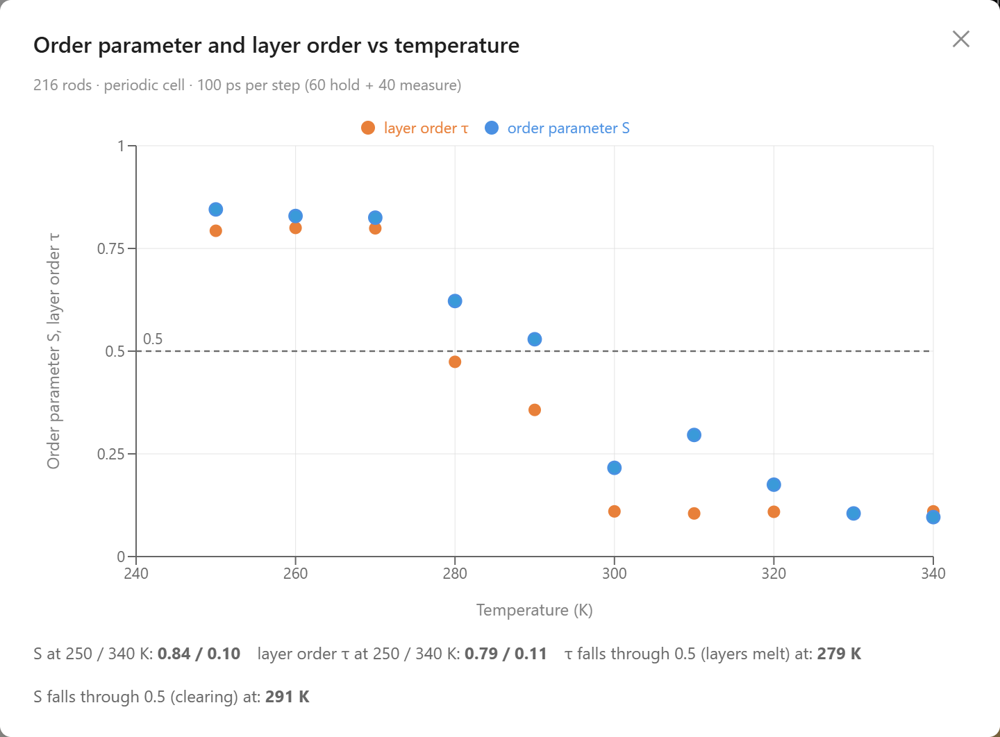
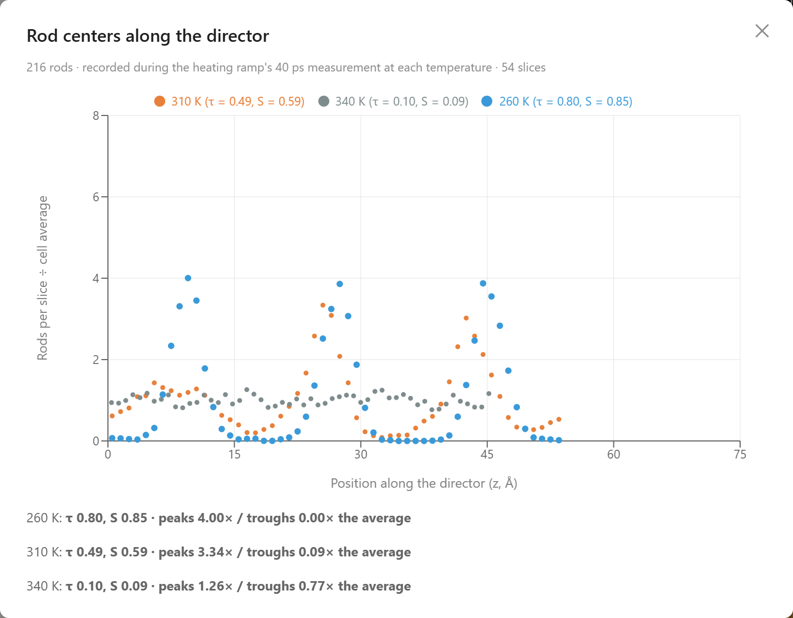
The fourth and fifth chat turns as the agent posted them: S and the layer order τ on heating (left), and where the rod centers sit along the director at three temperatures of that ramp (right).
So, started on the lattice, the rods in this lab are a smectic below about 300 K, including the 293 K of the window above, and the drop near the clearing point includes the loss of the last layers as well as of the shared direction. The fourth and fifth turns start from the layered lattice too. In test runs started without layers, from the same rods with each column shifted along its axis by a random amount, layers formed within 100 to 200 ps at 260 and 270 K, though not within 300 ps at 280 K, so the layers are not only a memory of the lattice. In one 200 ps run of that start at 293 K, S fell to about 0.5 within 60 ps, so the clearing point of a cell with no layers to lose may lie below the one quoted next.
The Clearing Point
The measure of alignment is the nematic order parameter S, which is 1 when every rod is parallel and 0 when they point in every direction; 5CB at room temperature measures about 0.6. In the published run of the heating and cooling ramp above, the agent held the rods 60 ps at each temperature and then averaged S over 20 ps more. At 263 K the rods are strongly ordered, S = 0.84. Heating in steps of 10 K, S falls slowly to 0.77 at 293 K, then drops through 0.67 at 303 K and 0.55 at 313 K to 0.29 at 323 K, and stays between 0.10 and 0.25 to 383 K. It crosses 0.5 at about 315 K. That is the clearing point of the model started from its layered lattice, the temperature at which the liquid crystal becomes an ordinary liquid with no preferred direction. The crossing moves by ten kelvin or more from one run to the next: an earlier run of this cell crossed at 308 K, three runs of the same heating steps on a 200-rod cell at the same density crossed at 308, 315, and 319 K, and three runs of a 400-rod cell, tested for the mixture below, between 308 and 321 K. Real 5CB clears at 308 K, 35 °C; displays use mixtures of similar molecules whose clearing points lie well above the temperatures a screen meets. Part of that agreement is built into the model. The depth of the attraction between rods was set so that they are ordered at room temperature and lose their order on heating, and the density of the cell was chosen so that temperature decides the order, so the agreement with 308 K, within the scatter between runs, checks that the model, started this way, is consistent with 5CB; a start without layers may clear lower. The jump in volume at constant pressure and the response to the field were not tuned: they come out of the simulation. The drop in the model is spread over a few tens of kelvin where a real sample switches within a degree, for two reasons the agent gives in its answer: the cell holds the rods at a fixed volume, so it passes through a mixed state of nematic and liquid on the way, and 216 rods are few.
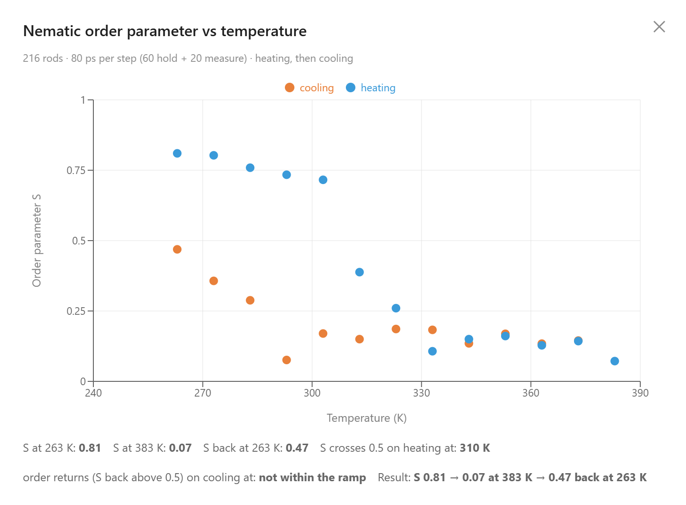
The first chat turn: S on the heating leg (blue) and the cooling leg (orange), 80 ps per step.
The cooling leg is the more surprising half of the chart. Stepping back down from 383 K, S stays between 0.09 and 0.28 down to 283 K, rises to 0.36 at 273 K, and reaches 0.52 only at 263 K, the last step, against the 0.84 the heating leg began at. So the order starts to return about 50 K below where it was lost; in an earlier run it had not returned at all, S = 0.16 at 263 K. Order has to grow from a patch of rods that happen to agree, and in a cooling liquid that takes extra undercooling and time. The cell has no walls to seed it, and 80 ps per step is too short for a nematic to grow far on its own, so the liquid supercools through nearly the whole ramp. The gap between the two legs is hysteresis, the mark of a first-order transition, for the same reason the liquids in the phase-change article have to be given a seed crystal to freeze. Below about 300 K the heating leg was layered as well as aligned, so on the way down the layers as well as the shared direction would have to grow back. Buttons under the chart load the rods into the lab as each step of either leg left them, so a student can look at the layered rods at the start, the liquid at the top and the first patches of order at the bottom. The next section gives the liquid that time.
Order from the Liquid
A ramp with 80 ps steps shows at most the start of the ordering. The last chat turn of the example waits instead. It melts the rods at 400 K until both kinds of order are gone, which took 90 ps (S = 0.13, τ = 0.11), then drops the thermostat at once to 260 K, about 50 K below the clearing point, and holds it for 800 ps, charting S and τ against time. For about 300 ps S rises and falls between 0.08 and 0.36; then it climbs steadily, passes 0.5 for good at 420 ps, reaches 0.85 about 150 ps later, and ends at 0.88. This is nucleation: a patch of rods that happen to point the same way grows once it is large enough to outlast the jostling of its neighbors, and then it takes over the cell. The layer order stays near 0.1 to 0.2 for most of the run; it climbs to 0.36 while the rods align, falls back to about 0.15, and creeps up to 0.23 by the end, so the rods line up without stacking into lasting layers. That is a nematic, the phase the heating ramps never showed, because they started from the layered lattice. The chart keeps the last frame of the run, and its Show final state button puts the aligned rods into the lab to look at; a row of buttons below it loads the rods as they were when the thermostat dropped, when S rose for good past 0.25, 0.5 and 0.75, when it leveled off, and at the end, so a student can watch the order grow. The wait depends on chance and on how far the liquid is cooled: in one 2 ns run at each temperature before the example was published, S passed 0.5 after 0.3 to 0.4 ns at 260 K, 0.5 ns at 270 K, and 1.1 ns at 280 K. Layers did not form from the nematic within those 2 ns: at 260 K the layer order only crept from 0.15 to 0.25. They did form within 200 ps from the column-shifted start, whose rods begin perfectly parallel in a lattice of columns. So the cooling leg of the first chart is the supercooling of a liquid that orders when it is given time, and the 80 ps steps were too short to show more than the start of it.
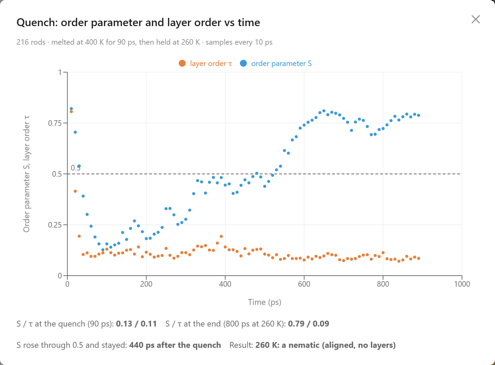
The last chat turn. Time on this chart counts from the start of the melt, so the drop to 260 K is at 90 ps and S passes 0.5 for good at 510 ps, 420 ps after the drop.
Clearing at Constant Pressure
The fixed volume is the first reason the drop of the model is spread out, and the third experiment removes it. Reload the example before running it: the pixel switch leaves the rods as a hot liquid, and that liquid, cooled to 303 K at 8 MPa, stayed disordered at 303 to 323 K in two test runs, as the cooling leg above does at those temperatures. Hold Pressure replaces the fixed cell with a fixed pressure of 8 MPa, about eighty atmospheres, and a Berendsen barostat rescales the cell a little every step until the rods push back with that pressure on average. At 303 K it first packs them, from a reduced density of 0.185 to about 0.24, and the denser rods are more ordered, S = 0.93. Heated in the same 10 K steps, they keep S at 0.91 or above through 333 K, fall to 0.46 at 343 K and to 0.06 at 353 K: nearly the whole clearing happens within one step, near 342 K. At constant pressure the cell can grow as the rods lose their order, and it does: it is 82 percent larger at the end of the ramp than at 303 K, and it grows by 49 percent between 333 and 343 K, where the order is lost, and by 8 percent more in the next step. A large change of volume over a narrow range of temperature is what a first-order transition looks like when the sample is free to expand. The clearing point itself moves 27 K above the fixed-volume 315 K. In this run the rods are still packed denser than the fixed cell when they clear, 0.229 against 0.185 at 333 K, so most of the shift is the density: denser rods need more heat to tumble free. (In an earlier run the cell had grown back to the fixed cell's density before the rods cleared, and they still read S = 0.79 there, so constant pressure can also hold the order a little longer than density alone would.)
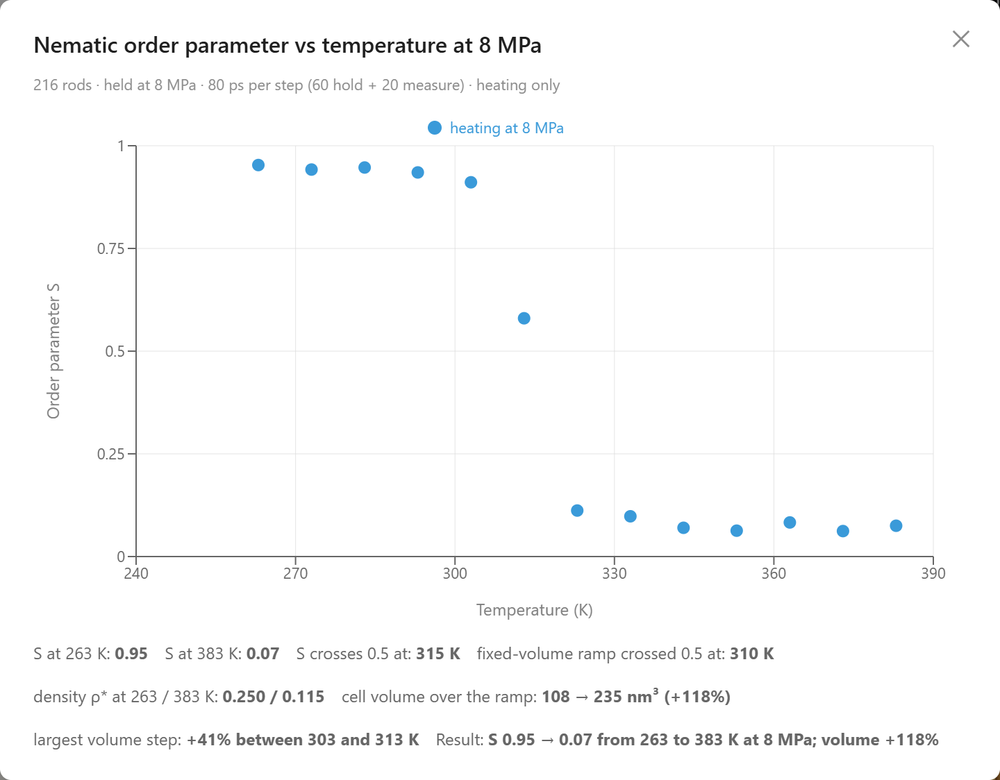
The third chat turn: at 8 MPa nearly the whole drop of S falls within one 10 K step.
The Switch Inside a Pixel
In a display, a voltage across the cell turns the rods, and light passes through the pixel or not depending on which way they point. The walls of a display cell hold the rods in place until the voltage passes a threshold, and the turning that follows is the Fréedericksz transition. The lab applies an aligning field, which plays the part of the voltage and turns the rods by the same coupling. The cell has no walls, so the rods turn at any field strength, with no threshold to pass. With the rods disordered at 383 K, S near 0.22 and the average direction leaning 70° from vertical, the agent switches the field on. The rods were lined up mostly across the field, so S first falls, to 0.17 after 5 ps, as they leave that direction, and then climbs along the new one: by the end of the 10 ps pulse it is about 0.34 and the tilt has dropped to about 12°. When the field is switched off, the rods keep the order it added, S near 0.40 with the tilt at 5°, for the 10 ps recorded. A student can try the same switch at 293 K, where the field only sharpens an order that is already there, and weaken the field to see how the turn shrinks.
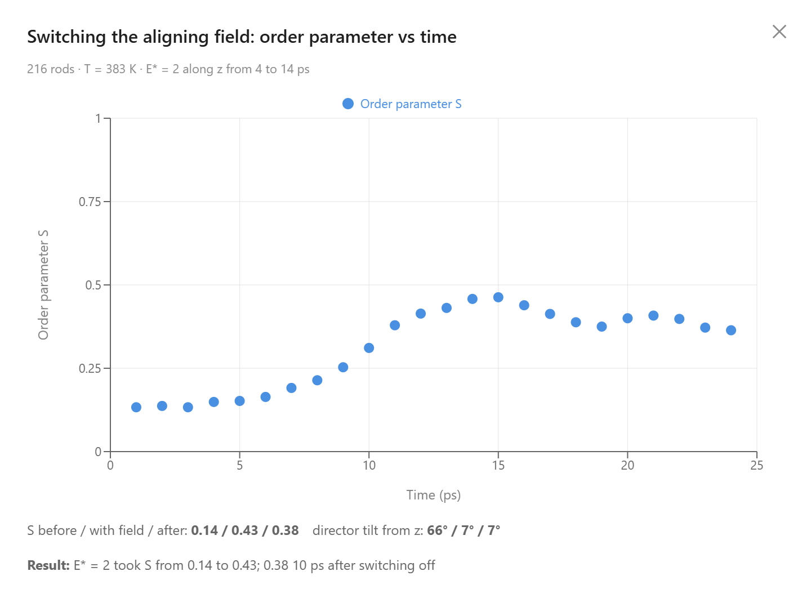
The second chat turn: the field is on from 4 to 14 ps.
Another example in the same menu, A Guest-Host Liquid Crystal Display, dissolves 20 long dye rods in 360 of these rods, laid across the cell, the off state of a pixel. The field turns only the host, and the host carries the dye with it. In its published run at 293 K, the dye's absorption of light polarized across the cell fell from 0.92 to 0.26 of its maximum while the field was on, the way a guest-host pixel turns from colored to clear without the polarizing filters of an ordinary display.
Mixing Long and Short Rods
The liquid crystal in a display is rarely one compound. E7, a classic display mixture, is about half 5CB blended with longer molecules, and it stays a liquid crystal up to about 60 °C, where 5CB alone clears at 35 °C. A second example, Mixing Long and Short Rods in a Liquid Crystal, models a mixture of that kind. It holds 320 of the 5CB-sized rods, the host, and 40 rods twice as long, 36 Å by 5 Å, in a periodic cell at the same packing as the first example. Each long rod takes the place of two short rods stacked end to end, and the cell is narrowed until the rods fill the same share of its volume, so cells with more or fewer long rods differ in composition only. Rods of different sizes interact through the Gay–Berne potential for unlike rods, in which the tip of a long rod against the side of a short one is a different contact from the reverse. Like the first example, this cell starts from a layered lattice, ten by ten sites in four layers with each long rod spanning two of them, and its 5CB-sized rods form layers at low temperature as they do in the first example, so the order at the low end of its ramps includes layers. The long rods were not checked for layers. In test runs, rods 36 Å long on their own stayed layered above 500 K, so some of the order they keep at high temperature below may be layering.
A mixture of 320 host rods, 18 Å long, and 40 rods 36 Å long, drawn in their own color, at 293 K. Press Play to watch the two kinds of rod move together.
Asked to heat the mixture from 283 K to 473 K and chart each kind of rod on its own, the agent measured the order of each kind about its own average direction, and the two kinds diverge. The short rods cross S = 0.5 near 304 K, close to the 310 K of the 400-rod cell of short rods alone in the next experiment, but above that they keep some order that the pure host loses: 0.15 at 473 K, where the pure host reads 0.05. The long rods stay above 0.5 at every step to 473 K and still read 0.79 there, 165 K above the clearing point of real 5CB. A long rod touches more neighbors along its length than a short rod does, and at this packing it has little room to turn, so it is the last to lose its direction. Taken together, all the rods cross 0.5 near 307 K.
Asked next to build the same cell with no long rods and with 80, and to run the same ramp on each, the agent charted the three compositions together. With no long rods S crosses 0.5 near 310 K and with 40 near 307 K, while with 80 it holds above 0.5 to about 390 K and still reads 0.38 at 473 K, the top of the ramp, where the other two read 0.05 and 0.22. Each curve is a single run, and a different starting arrangement moves a crossing by ten kelvin or more, so the gap between the first two cells is within that scatter. The 80-rod cell is far outside it. It keeps its order about 80 K longer, because with a quarter of its rods about seven times longer than wide it has too little room for every rod to point its own way, and the order that remains looks like the order from packing that Onsager described. In this model the clearing point depends on the composition of the mixture as well as on temperature.
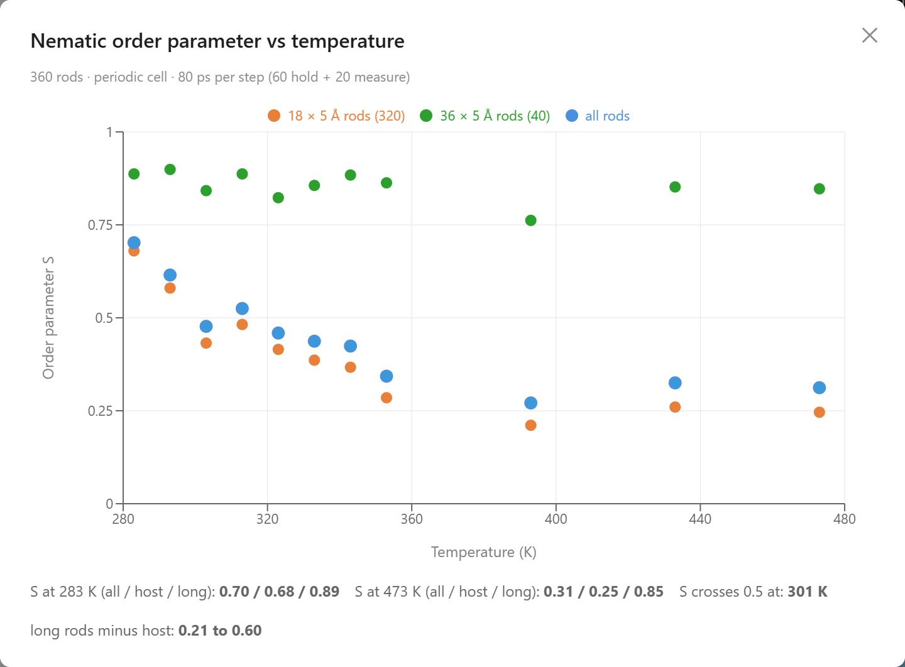
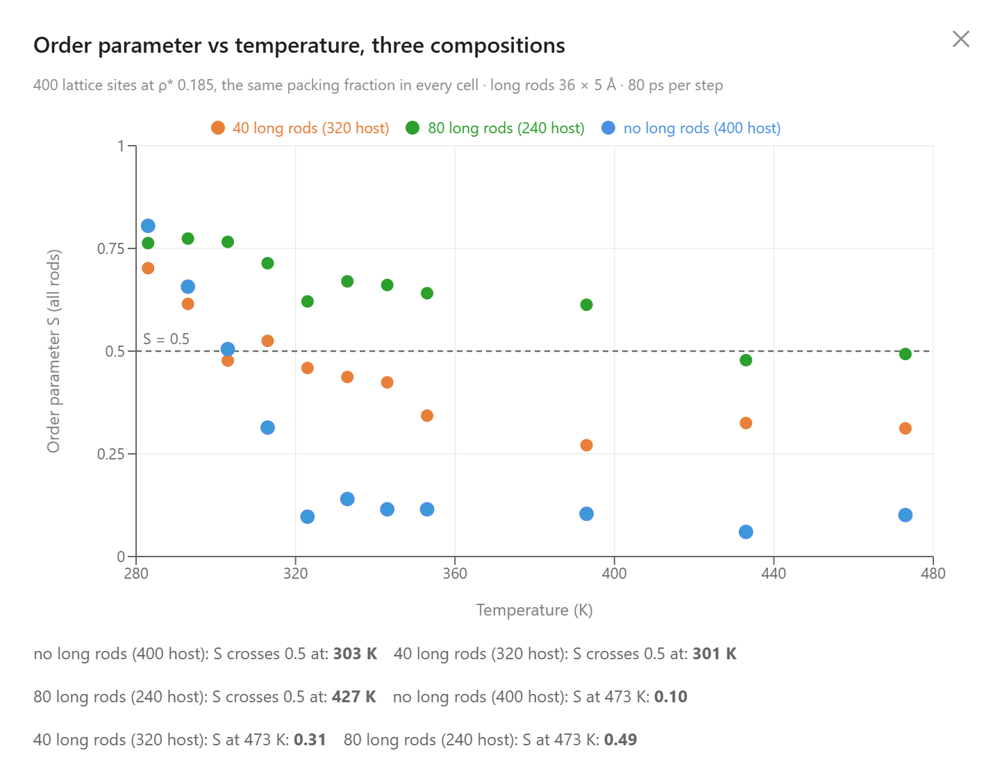
The two chat turns of the mixture example: each kind of rod on its own (left), and three compositions at the same packing (right).
A student can also make a mixture by hand, in either example. Pause the simulation, right-click a rod, enter a new length and width under Resize, and press Apply; or ask the agent, for example “make rods 0 to 19 twice as long.” The resized rods become a new kind with a color of their own and a mass that grows with their volume, while the other rods keep their size, and Undo takes the change back. A rod that has grown into its neighbors needs Minimize Energy before the simulation runs again.
Rods with a Dipole
A 5CB molecule carries an electric dipole of about 4.8 debye, from its cyano group, and the Gay–Berne ellipsoid leaves it out: a rod of the examples above has no head and no tail. A third example, Polar Rods in an Electric Field, puts the dipole back as a point dipole at the center of the rod, along its axis (the Gay–Berne–Stockmayer model), and asks what it changes. Two dipoles side by side attract when they point opposite ways and repel when they point the same way; end to end they attract when they point the same way; and a static electric field turns a dipole to point along it, as a magnetic field turns a compass needle. The lab holds 120 rods of the size and attraction of the 5CB rods, filling a periodic cell thinly, about 6 % of its volume, at 450 K, well above the clearing point, so they form a gas. Sixty of them carry a dipole of 8 debye and are drawn two-toned, the positive end darker; the other sixty carry none. The two kinds have the same shape, mass, and Gay–Berne attraction, so any difference between them is the dipole's doing. The dipole is 8 debye rather than 4.8 because in test runs 4.8 debye changed which way touching rods pointed but hardly changed how many touched, and the gas is hot on purpose: at 450 K a contact between two rods lasts a few picoseconds and then breaks, so the share of rods touching settles to a steady value that measures how much the dipole helps.
Sixty rods with a dipole of 8 debye (blue, the positive end darker) and sixty without (orange), a gas at 450 K. Press Play and watch the blue rods find one another.
Watched for 200 ps, the polar rods spent far more of their time touching a neighbor than the plain ones: 58 % of them over the last fifth of the run, against 35 % of the rods with no dipole. Their contacts were almost all antiparallel, 88 %, one rod's head beside the other's tail, where about half would be if the dipoles did not care which way a neighbor pointed; the largest cluster held 15 rods. The attraction between two 8 debye dipoles side by side at contact is about 0.3 eV, a little more than the Gay–Berne well, and unlike that well it falls off slowly, as the cube of the distance, so a polar rod feels a neighbor from several rod widths away.
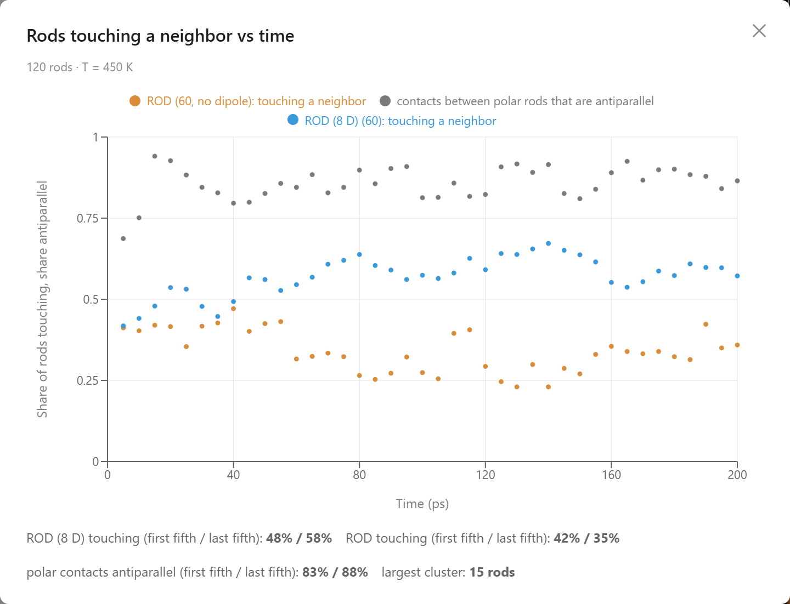
The first chat turn of the polar-rods example: the share of each kind of rod touching a neighbor, and the share of polar contacts that are antiparallel.
A static field of 10 V/nm along z, switched on at 40 ps and off at 100 ps, turned the polar rods and left the plain ones alone. The average of the polar rods' heads along the field rose from −0.01 to 0.98 while the plain rods stayed at 0.02; in this model a static field acts only on a dipole, where a real nonpolar molecule would also be turned, weakly, through its polarizability. The field is about ten thousand times the field across a display pixel because the alignment is set by the dipole's energy in the field divided by the thermal energy: at 1 V/nm that ratio is 4 and the heads reach only 0.74, each rod still tumbling; at 3 V/nm it is 13 and they reach 0.92 but wobble about 23° around the field; at 10 V/nm it is 43 and the wobble is 12°. Turning the rods also changed their pairs. An antiparallel pair's dipoles cancel, so to line both up the field has to pull the two apart: the share of polar rods touching a neighbor fell from 68 % to 35 %, about the plain rods' 34 %, and the contacts that remained were all head to tail along the field, none antiparallel, since dipoles pointing the same way attract end to end. When the field went off the heads scattered within about 10 ps and the antiparallel pairs formed again, 44 % touching and 81 % antiparallel by the end.
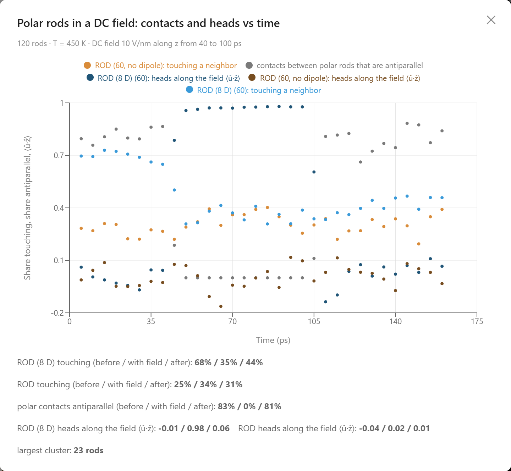
The second chat turn: a field of 10 V/nm from 40 to 100 ps. The dark curves are the heads along the field, the light ones the shares touching, the gray one the share of polar contacts that are antiparallel.
Cooled to 300 K, the polar rods stuck and the plain ones mostly did not. Over 200 ps the share of polar rods touching a neighbor rose from 70 % to 90 %, and they gathered into bundles, the largest of 26 rods, with 79 % of their contacts antiparallel; the plain rods went from 44 % to 41 %, and many of those were stuck to a polar bundle rather than to one another. In a gas this thin a plain rod meets another only by chance, and the Gay–Berne attraction reaches barely a rod width beyond contact, while the dipoles pull on one another from several rod widths away. What the cooling changes is that a contact, once made, no longer breaks: at 300 K the well is nine times the thermal energy, so the polar rods pile up instead of pairing and parting as they do at 450 K. The buttons under each chart load the lab at moments of the run, and set the thermostat to the temperature the frame was made at, so a student can press Play on the 300 K bundles and watch them hold.
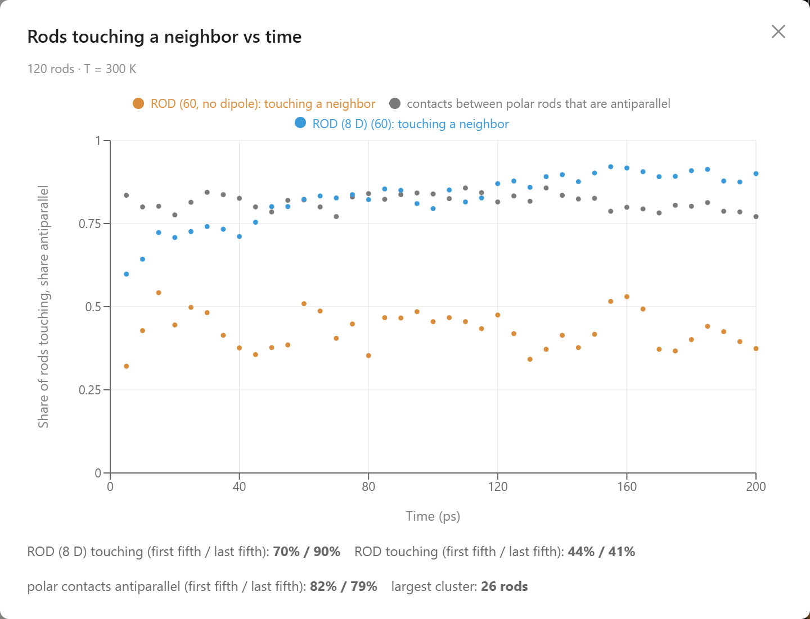
The third chat turn: the same gas cooled to 300 K.
A charge acts on a dipole too. The field of a charge turns a dipole's opposite end toward it, and because that field weakens with distance the turned dipole is then pulled inward: the ion–dipole attraction that gathers water molecules around a dissolved ion. The fourth chat turn gives one plain rod a charge of +2 e and another, 40 Å away on the other side of the box, −2 e, holds both in place so that their surroundings stay in view, and watches for 200 ps, back at 450 K. Both ions gather a shell. The share of polar rods within 14 Å of the positive ion rose from 6 % to 12 %, about seven rods, and of the negative ion from 4 % to 13 %, about eight, while the plain rods, which feel nothing from a charge, stayed at the one or two that chance puts near either. The two shells differ in which end faces the charge. Around the positive ion the polar rods turn their negative, plain-colored halves inward; around the negative ion their positive, darker halves. Measured with the sign of the charge taken into account, the two shells point alike, 0.64 and 0.60 on a scale where 1 is every rod exactly radial; some rods are still paired antiparallel with a neighbor, which keeps that number from climbing further. The model is symmetric under reversing a charge together with every dipole, so the two shells should differ only by chance, and they do. The signs on the two charged rods and the two shades of the polar ones make the arrangement readable in the lab: a plus sign surrounded by plain halves, a minus sign surrounded by dark ones.
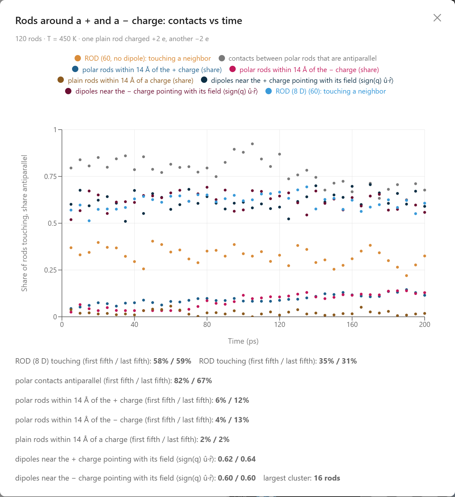
The fourth chat turn: one plain rod carries +2 e, another −2 e. The shares of polar rods near the positive ion (dark blue) and the negative one (crimson) climb together while the plain rods (brown) stay at chance; the near-black and dark-wine curves are how the dipoles near each ion point, the light gray one the share of polar contacts that are antiparallel.
What the Simulations Produced
The simulations were given the forces among rods. Everything below came out of them:
- A clearing point — 216 rods started on a layered lattice lose their shared direction between 293 and 323 K, crossing S = 0.5 at 315 K (308 K in an earlier run, 308 to 319 K in repeated runs of a 200-rod cell), against 308 K for 5CB, with the attraction between rods set so that they order at room temperature.
- Hysteresis — cooled back down in 80 ps steps, the rods stay mostly disordered down to 273 K and regain S = 0.52 only at 263 K, where the heating leg began layered and aligned at S = 0.84.
- Order from the liquid — melted and then held at 260 K, the rods line up on their own: S passes 0.5 after 420 ps and ends at 0.88, while the layer order ends at 0.23, a nematic.
- Layers ahead of alignment — heated from 250 K, the layer order falls through 0.5 at 309 K, about five kelvin before S does at 314 K, but the two fall over overlapping ranges, and no step of the heating ramp shows a clean nematic between the smectic and the liquid.
- A sharp transition under pressure — at 8 MPa the rods clear within one 10 K step near 342 K, and the cell grows by half in that step.
- A pixel switch — a 10 ps pulse of an aligning field turns the average direction of disordered rods to within about 12° of vertical and raises S from 0.22 to 0.34.
- A mixture whose rods diverge — in a cell of 320 short and 40 long rods, the short rods lose their order near 304 K while the long rods stay above S = 0.5 to 473 K; with 80 long rods the whole cell stays above 0.5 to about 390 K.
- Dipoles that stick — in a hot, thin gas, rods carrying an 8 debye dipole touch a neighbor 58 % of the time against 35 % for identical rods without one, 88 % of their contacts antiparallel; cooled to 300 K they gather into bundles (90 %) while the plain rods stay loose (41 %).
- A field on the dipoles — a static field of 10 V/nm turns the polar rods to 0.98 along it and the plain rods not at all, breaks the antiparallel pairs into head-to-tail chains, and lets the pairs form again within tens of picoseconds of switching off.
- Ions among dipoles — a plain rod held in place and given +2 e and another given −2 e each gather seven or eight polar rods within 14 Å in 200 ps, negative ends toward the positive charge and positive ends toward the negative one, while the plain rods ignore both.
Conclusion
This article uses liquid crystals to illustrate a new way to learn science: students converse with an AI agent that turns a plain-language question into a molecular dynamics experiment and returns measured data. The clearing point of a display material, the hysteresis on cooling, the nematic that grows from the liquid when it is given time, the layers that fade ahead of the alignment, the switch inside a pixel, the effect of mixing two kinds of rod, and the dipoles that make polar rods pair up, follow a static field, and gather around ions become something students measure for themselves in a browser. By pairing a physically grounded coarse-grained simulation with an AI that can set it up and run it, AIMS turns a student's curiosity into a genuine scientific investigation of the material inside every LCD screen.
← Back to AIMS